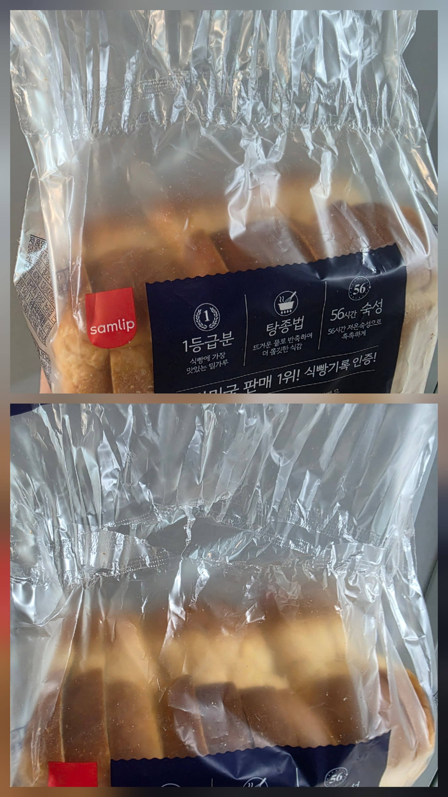
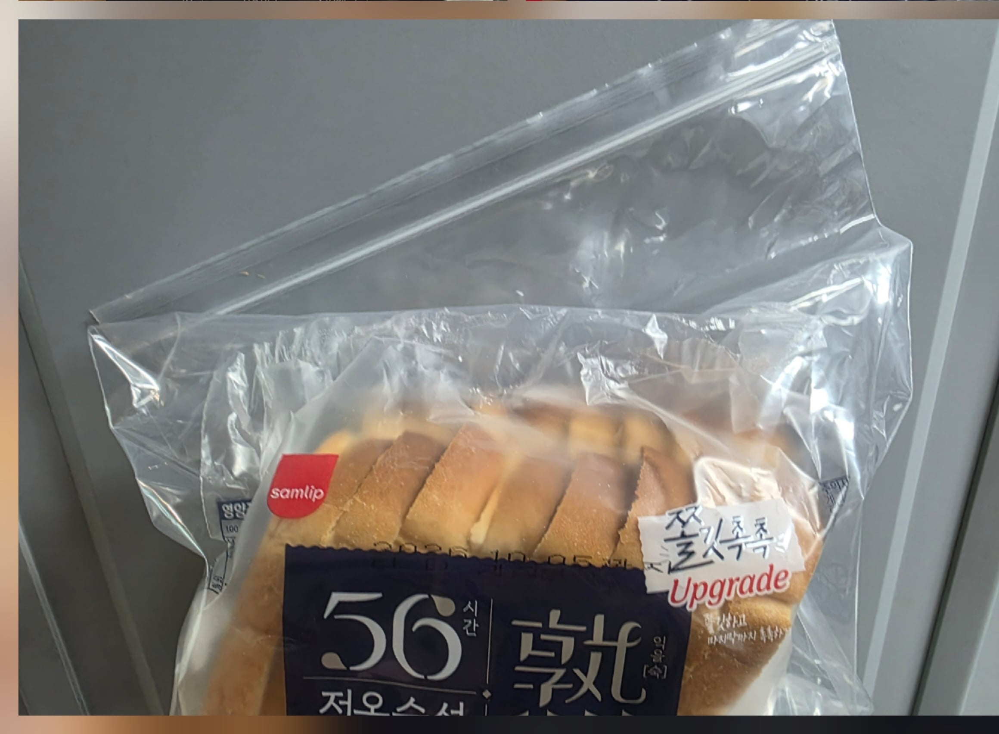

갠적으로 토스트용으로 인터넷 같은데서 구매하는 공장식빵들.. 뭐 공장식빵들이 토스트 하면 다 거기서 거기라 대충 암거나 구매하는 편인데 젤 ㅈ까튼게 포장지 임.
특히나 실링된게 지랄맞아서 아무리 조심해서 뜯어도 무조건 터지더라. 함께 주는 플라스틱 고정핀은 공기 접촉해서 상하거나 마르는거 방지 하는 용도일텐데 저 위치에 터지고 공기 안닿게 포장할라면 식빵이 다 짜부 될 만큼 돌려야 됨.
실링 안하고 그냥 금박은박철사같은 걸로 꼬아서 고정만 하던가 위생상 유통상의 이유로 실링을 꼭 해야 하면 위쪽만 해서 살짝 자르고 쓸수 있게 해주면 되는데 실링 위치가 존나 병신 같음.

그래서 나 같은 경우는 따로 큰 지퍼백 사서 터진 봉지채로 넣어 보관 함. (유통기한이나 이런 거 확인 용으로)

이렇게 하면 오래 보관해도 냉장고에 넣어둬도 냄새 같은것도 안배기고 보관성은 좋은데 안에서 빵 꺼내는게 귀찮음.
댓글
수집 당시 댓글 41개
고독한사냥꾼 · 18 시간 전
맘보 · 18 시간 전
중앙부터 살살뜯으면 잘뜯기던데
· 익명
능력자네.. 난 저거 아무리 살살 뜯어도 거의 90프로 이상 터지더라.. 특히나 삼립 저거는 이중 실링이라 위 아니면 아래 무조건 터짐 ㅋㅋ
어리석은중생 · 18 시간 전
맨 식빵 우유에 찍어 먹는게 제일 맛있더라
· 익명
토스트해서 딸기잼이랑 땅콩버터 반반씩 발라먹으면 개꿀맛임
· 종합병원 · 14 시간 전
한면에 잼 한면에 버터해서 합침? 아님 어케하는거
· 익명
ㅇㅇ 만약 한장이면 반은 땅콩버터 반은 딸기잼 그래서 접어 먹음
· 망고모찌 · 13 시간 전
난 땅콩버터가 도대체 무슨 맛인지 모르겠음...
동샘 · 18 시간 전
걍 식빵보관통 하나 사셈
안쓰게돼도 김치나 담아놓으면 됨
· 익명
오 있네.. 하나 바로 주문 함 👍
존터너스 · 18 시간 전
따로 용기같은거 없나?
꾸구가가 · 18 시간 전
저 봉지 ㄹㅇ 빡치긴함ㅋㅋㅋ
dkny7bbk · 18 시간 전
나만 이 생각하는게 아니군.
무선마우스 · 18 시간 전
그냥 한번에 다먹으면 되는데 문제라도?
· 익명
· 번한강행 · 18 시간 전
· 월탱죠아오공맘죠아 · 11 시간 전
맞지.
내 아는 멸치형이 자기는 살 쪄 볼라고 피자 시키고 먹기 편하게 한 조각 씩 호일에 싸서 냉동실에 보관해서 먹었다길래 내가 말했지.
애초에 피자가 왜 남냐고.
세미 · 14 시간 전
Alchemy · 14 시간 전
3립의 저 탕종식빵이 개 씹지랄이긴함. 유통기한도 개같이 짧은데 2장 먹을라고 뜯으면 그자리에사 다쳐먹게 만듬. 위에서 살살 뜯어봤자 뜯기지도않고 힘 좀 주면 아랫부분 터지면서 잠금도 못함. 그냥 디자인 자체가 실패한듯
· 익명
ㄹㅇ 그냥 실링 위치만 위로 해도 터져도 전체 기장이 꽤 남기 때문에 그냥 입구 말아서 고정핀 주는걸로 고정하면 되는데 저거 도대체 누구 머리에서 나온지 모르겠음 ㅋㅋ
ery · 14 시간 전
좀 다른 얘기지만 캔식빵 함 무바라
· 익명
캔에 들어간 식빵이야? 그게 뭐임?
· ery · 13 시간 전
장기보관용 압축식빵인데 생각보다 먹을만 했음
미군 mre 에서도 종종 나오는 구성중 하나인데
걍 그런게 있다는 것만 알아둬 기회되면 맛이나 봐보라는 정도
· 익명
ㅇㅋ
돼지본갈비 · 14 시간 전
나도 저거 사먹는데 짜증나긴함 ......
ㅅㅂ
코알라도스 · 14 시간 전
저거 씨발 ㅋㅋㅋㅋ 진짜 개빡침
린스컴 · 14 시간 전
식빵 좋아하면 도제식빵 함 무봐라
· 익명
ㅇ 한번씩 사먹음.. 근데 식빵이 한방에 먹는거 아니면 시간 지나서 냉장고든 냉동고든 들어가서 해동 해먹어야 되는 시점 되면 다 똑같더라구 ㅋ
칭찬봇 · 14 시간 전
난 밤식빵이 조아.
이모티콘혐오자 · 14 시간 전
냉동보관해서 먹음되는디
· 익명
나도 유통기간 달랑달랑하면 그렇게 함. 근데 토스트 해먹는데는 아무 문제 없는데 생으로 먹을라고 하고 하면 처음의 그 부드러운 느낌은 안살더라고... 글고 보관 잘못하면 냄새 베이고.. 밀봉은 무조건 해야 하는듯
구울요리 · 14 시간 전
과자 같은것도 먹다 남으면 통채로 투명 지퍼팩에 봉지채로 넣어놓는데
지퍼팩에 쩝촉 안하니까 오래써도 큰 문제 없고 ㅋㅋㅋ
노들나루 · 14 시간 전
근데 또 저렇게 밀봉 보관하면 곰팡이 금방 생기더라
2-3일 안에 빨리 먹으면 상관없지만
오늘은뭐먹냐 · 14 시간 전
걍 냉동 하고 렌지에 15초-30초 돌리면됨
춥고배고파요 · 14 시간 전
뚜쥬나 파바 행사할때나 배달어플 포장할인 할때
3~4개 사다가 얼리면 싸고 맛있슴
오늘도 뚜쥬어플 30% 할인 때려서 5천원짜리
고급식빵 3500원따리로 3통 가져와서 얼림
뚜쥬 탕종식빵 꼭 먹어봐
난 샌드위치가 주식이라 자주 얼려둠
배틀드립 · 13 시간 전
진공 밀폐 용기를 쓰세요......
rclone · 13 시간 전
ㅇㄱㄹㅇ
빵이랑 바짝 붙여놓은데다 뜯으려고 하면 옆으로 찢어지는 실링
배틀딱 · 13 시간 전
씰링위치 병신같이 찍어놨긴함ㅋㅋㅋ
통조림왕 · 12 시간 전
난 밀도 리치식빵이 제일 맛있더라
아마란타인 · 11 시간 전
빵은 냉동실에 넣는거다
먹기 전에 상온 해동하면 원래대로 포슬포슬하게 돌아 옴
카미트리아 · 11 시간 전
저거 이마트 트레이더스에 4장씩 소포장 되어있는거 있다